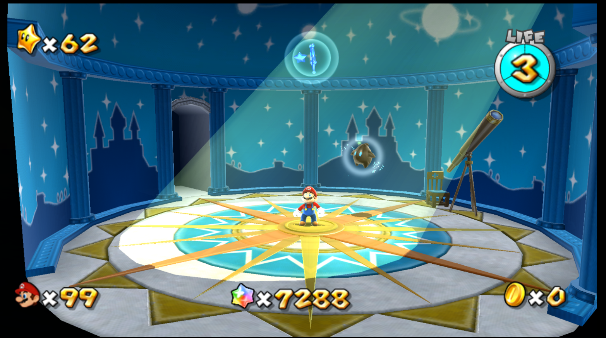

01PREMIÈRES EXPLORATIONS
La Terrasse
C'est le premier dôme que Mario découvre. Il permet de faire ses premiers pas dans l'univers galactique et de découvrir les bases de l'exploration spatiale.
Good Egg Galaxy
Honeyhive Galaxy
Loopdeeloop Galaxy